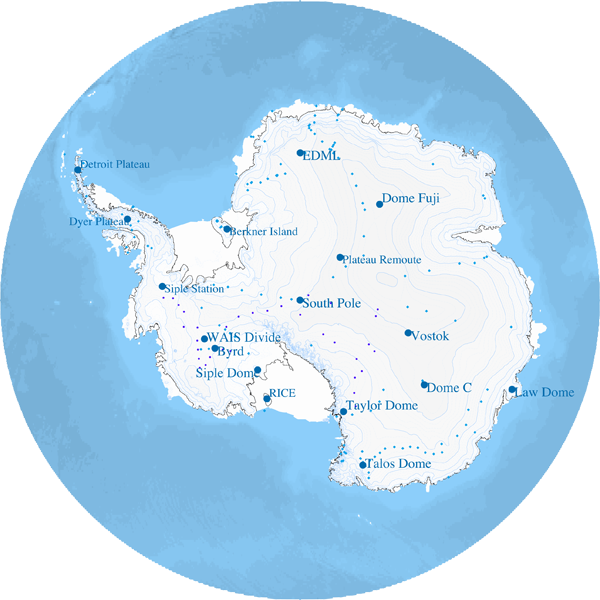

Volcanic products in Antarctic Ice cores
Please point and click on the ice core name to navigate to the selected data set. Additional ice cores are shown on the right panel.
Ice core selected:
Since late 1950's ice cores provided unprecedented detail of past climates. These frozen in time archives captured in great details products erupted during volcanic eruptions of the past.
Map was made using GMT and GIMP software.
Grounding line and hydrostatic line locations for the Antarctic coastline and islands around Antarctica are from NSIDC data set created by Dr. Bindschadler. Rtopo dataset was used for Antarctic ice sheet topography and global bathymetry (Timmermann, R et al., 2010). Antarctic ice core locations are from NSIDC and IceReader. Download unix bash shell scripts and data files that were used to make this map.